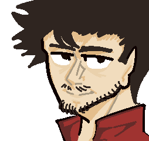
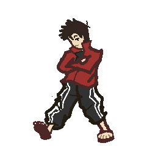

INTERVIEW:
manado210
"coronado"
(flashing lights warning)
nickyMaurice: "Firstly I'd like you to introduce yourself for any members of the server who might not already know you."
manado210:
"(Sorry if there are any English mistakes, it's not my native language.)"
"SUP, I am Manado, I've been on this server for about a year and four months. I'm nobody special here, just a guy who uses funny names and makes art about things that never happened, haha."
Q1:
How did you find out about the Lukeisha server?
manado210:
"A friend introduced me to Hyper's art, and I immediately started drawing."
"Soon Hyper became aware of my art and joined my private group of cool friends."
nickyMaurice:
"And what interested you the most about Lukeisha?"
manado210:
"Hyper took characters with concepts that are fixed in the community and transformed them into such unique and different ideas, and it was love at first sight."
Q2:
So who’s your favorite character?
manado210:
Q3:
What motivates you to make content?
manado210:
"I like to experiment with possibilities, new concepts, and delve into a universe that even I don't fully understand, and if Hyper likes what he sees, that's enough for me to continue."
Q4:
Do you think joining the Lukeisha server had an impact on your life? Would things be different if you hadn't?
manado210:
"I won't lie, it didn't make that much of a difference in my life, but it's always nice to meet new people and show them your work."
Q5:
Waffles, or Pancakes?
manado210:
"absolute Pancakes"
nickyMaurice:
"Anything you'd like to add?"
manado210:
"Stay hydrated."
